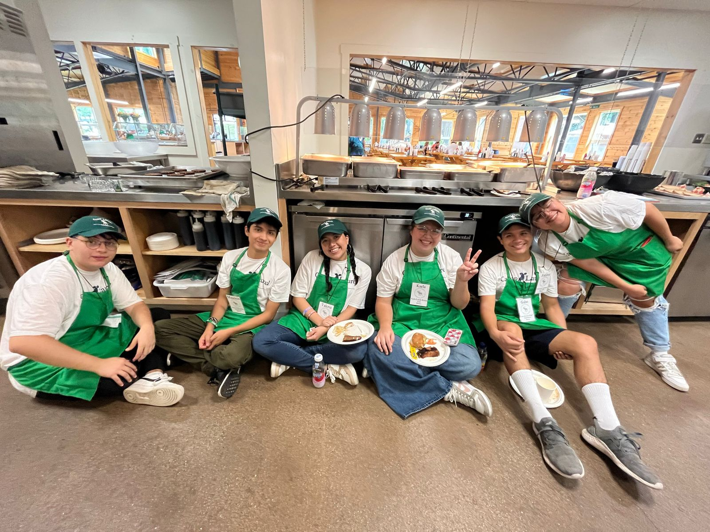
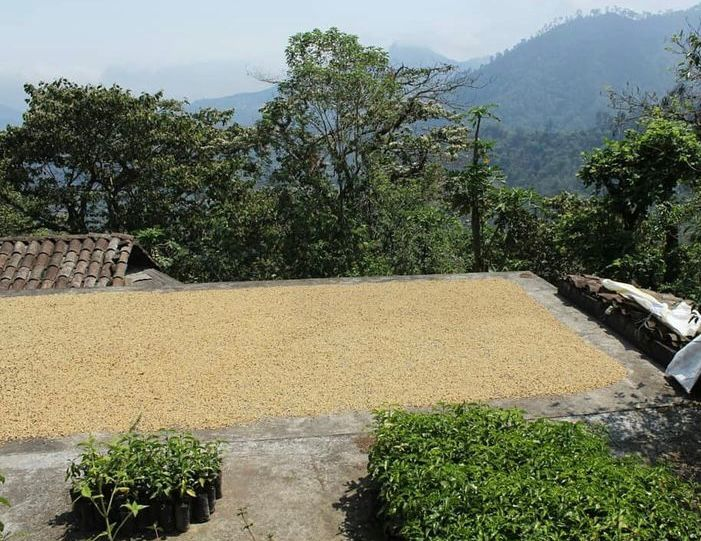

Mis hobbies
Café
El café se ha convertido no solo en un hobby, sino en una auténtica pasión para mí. Mi experiencia laboral en cafeterías ha sido fundamental para adentrarme en el fascinante mundo de esta bebida. Trabajar detrás del mostrador me ha permitido no solo apreciar la complejidad y el arte detrás de cada taza, sino también involucrarme activamente en la cultura cafetera. Esta inmersión me llevó a consumir café de manera más consciente y, como resultado, decidí ampliar mis conocimientos participando en cursos de café de especialidad. Explorar las sutilezas de los granos, métodos de preparación y perfeccionar mis habilidades en la degustación ha sido una experiencia gratificante que ha elevado mi amor por el café a un nivel completamente nuevo. Los dos lugares donde más he desarrollado esta parte de mí son:
- Zaranda: Cafetería ubicada en el centro de Puebla donde estuve trabajando un par de años como mesera y posteriormente como barista, aprendí y crecí mucho dentro de este lugar por lo que le tengo mucho cariño.

- Camp Laurel:Campamento de verano ubicado en Mount Vernon, Maine donde he pasado 2 veranos trabajando como barista.

Voluntariado
El voluntariado es mi principal hobbie debido a mi firme creencia en la capacidad de generar cambios positivos. Mi experiencia en asociaciones civiles (enfocadas en trabajar con adolescentes) y otros lugares me ha permitido comprender la importancia de abordar temas sociales desde una perspectiva activa.
- Movimiento Éxodo

Éxodo es un movimiento eclesial católico a favor de los adolescentes. Su objetivo es la promoción integral del adolescente por medio de 5 valores.
- Psicosocial: Discernimiento, servicio a los demás, socialización
- Físico: Salud, higiene, alimentación, ejercicio
- Cultural: Asertividad, visión amplia, conocimiento de las raices
- Técnico: Creatividad, desarrollo y aplicación de habilidades, primeros auxilios
- Religioso: Oración, encuentro con Dios

- Ocotamanis
Ocotamanis es una localidad ubicada dentro del municipio de Hutzilan de Serdan en Puebla donde he trabajado como voluntaria con una familia originaria de ahí que se dedica a la producción de café

Cine
El cine, especialmente las películas animadas, ocupa un lugar especial en mi vida. A lo largo de los años, estas obras cinematográficas han sido mis fieles acompañantes, ofreciéndome historias que han dejado una huella profunda en mi memoria. Más que un simple pasatiempo, encuentro en ellas una fuente de tranquilidad cuando la ansiedad se hace presente. Además, creo que mi atención al detalle se ha desarrollado gracias a esta afinidad. Cada fotograma es una ventana a la dedicación artística y técnica, y este aprecio por los pequeños detalles ha enriquecido mi perspectiva y contribuido a mi crecimiento personal.
Actualmente, por esto mismo, me encuentro laborando en Cinepolis